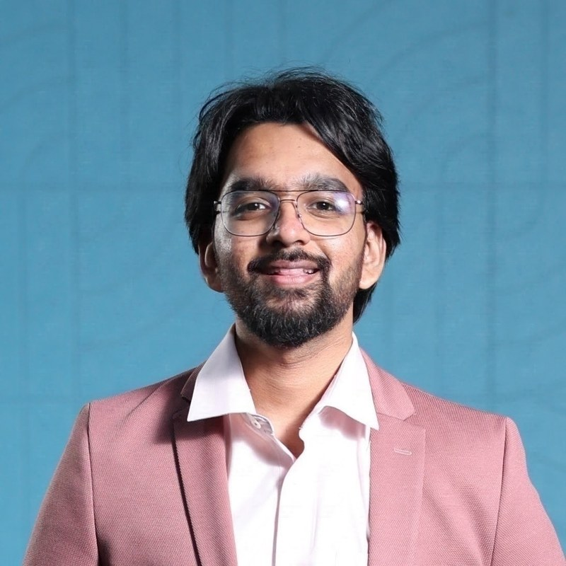

01
Foundation Models
Pre-training, post-training, long context, multimodal reasoning, and task-balanced VLM curricula.

Senior Research Engineer · Vision-Language Models Team Lead
I build sovereign vision-language foundation models from scratch — spanning data, pre-training, post-training, evaluation, and the ML systems that make them scale.
🎉 [Nov '26] Guest lecturer for Programming AI Accelerators at IIIT Hyderabad, a course by Prof. P. J. Narayanan. Nov 5, 2026: building production-grade offline VLM inference engines at scale. Slides →
🎉 [Oct '26] Invited as a speaker at the vLLM Meetup Mumbai 2026 on Durable execution around vLLM for large scale data generation. Slides →
🎉 [Sep '26] I will be presenting DocLayout-VL: A Foundational Model for Hierarchical, Open-set, and Promptable Document Layout Segmentation and DoCoG: Mask-based Multi-Type Grounded Chain-of-Thought for Document QA at ECCV 2026 in Malmö, Sweden. Spotlight session (DoCoG): Sat, Sep 12, 2026, 1:30 PM - 1:35 PM CEST, Room AB. Poster session: Sat, Sep 12, 2026, 3:00 PM - 5:00 PM CEST, ExHall — poster #193 (DocLayout-VL) and #106 (DoCoG). Come and say heyo!
🎉 [Jul '26] DoCoG has been selected for Spotlight Presentation at ECCV 2026 in Malmö, Sweden.
🎉 [Jun '26] REPLICA has been selected for Oral Presentation at ICDAR 2026 in Vienna, Austria.
🎉 [Jun '26] Two of our papers were accepted to ECCV 2026: DoCoG and DocLayout-VL.
🎉 [Jun '26] I will be presenting M3Grounder: Mask-Based Multi-Span and Multi-Granular Grounding for Document QA at CVPR 2026 in Denver. Poster session: Sat, Jun 6, 2026, 4:45 PM - 6:45 PM MDT, ExHall A & F. Come and say heyo!
🎉 [May '26] Two of our papers were accepted to ICDAR 2026: REPLICA and Patram-Bench.
🎉 [Mar '26] M3Grounder accepted to CVPR 2026 - the premier conference in computer vision!
🎉 [Feb '26] Exhibited PatramParse and Patram-Grounder work at the IndiaAI Impact Summit in New Delhi.
🎉 [Jun '25'] Launched Patram: India's first vision-language model for document understanding at the BharatGen Summit in New Delhi.
🎉 [Apr '25] Promoted to Senior Research Engineer and Vision-Language Models Team Lead at BharatGen.
🎉 [Dec '24] e-vikrAI was selected among six interesting Indian AI models from 2024 by IndiaAI.
🎉 [Oct '24] Attended Nvidia AI Summit in Mumbai as a delegate.
🎉 [Oct '24] Built e-vikrAI in 100 days and exhibited at India Mobile Congress in New Delhi.
🎉 [Jun '24] Joined BharatGen as a Founding ML Engineer to help build multimodal and multilingual foundation models for India.
🎉 [May '24] Graduated from IIT Hyderabad with a B.Tech in Computer Science and Engineering and received the Institute Gold Medal for Excellence in Academics and Co-curricular Activities.
🎉 [Apr '24] Completed 210 credits in B.Tech, including 17 credits of additional courses, surpassing the typical 125-credit requirement, with A+ grades in 19 credits of coursework.
🎉 [Apr '24] Won the IEEE Signal Processing Cup 2024 at ICASSP in Seoul, South Korea, with a $5000 winner prize.
🎉 [Feb '24] Selected to participate in Google Research Week in Bangalore as a student delegate.
🎉 [Apr '21] Received the Academic Excellence Award for 2020-2021 with the highest CGPA of 9.87 in the entire UG20 batch.
My work sits where multimodal modeling, document intelligence, and large-scale ML infrastructure meet.
Pre-training, post-training, long context, multimodal reasoning, and task-balanced VLM curricula.
OCR, parsing, layout understanding, grounding, VQA, reconstruction, and structured extraction.
Distributed training, large-scale generation, data systems, efficient storage, and multimodal evaluation.
A family of sovereign document VLMs, agents, evaluation systems, and infrastructure — from task-specialists to multi-task foundation models.
The common thread: build the models, agents, evals, and systems needed for sovereign multimodal intelligence end-to-end.
Explore Patram →I started by trying very different corners of ML. That breadth eventually converged into multimodal foundation models and systems.
Institute Gold Medal · Rank 1 / 1103.
Building sovereign foundation models.
Qiskit-based spherical q-means applied to multi-depot vehicle routing.
Open project → ResearchD-Wave CQM and QUBO formulations for vehicle-routing problems and variants.
Open project → Club · Inter-IIT Tech Meet 12.0D-Wave DQM business-rules engine for airline schedule-change optimization.
Open project →Motion-as-language modeling and training with in-house yoga MoCap data.
Open project → ResearchFrom Hebbian learning and Hopfield networks to SNNs and cellular neural networks.
Open project →Semantic segmentation and upsampling pipelines for autonomous-driving point clouds.
Open project → ResearchThree-stage CNN reconstruction for clipping, non-linearity, and quantization reversal.
Open project → Club · Silver, Inter-IIT 11.0GAN-based super-resolution for Chandrayaan TMC-2 imagery and lunar-atlas generation.
Open project → Club · Silver, Inter-IIT 10.0Age and gender estimation from low-resolution surveillance feeds.
Open project →Tool-selecting LLM agent with retrieval, ranking, and open-model generation.
Open project → Club · Gold, MilanFull-stack movie platform with opinion summarization and sentiment-based review clustering.
Open project →Evidence retrieval with TF-IDF and ColBERT, then classification with GPT models and XLM-RoBERTa.
Open on GitHub → Climate data modelingCNNs and LSTMs forecast a geomagnetic storm index from solar-wind data, with permutation importance.
Open on GitHub →Each course links to its material in my archive.
I enjoy explaining difficult ideas, helping people build, and contributing back to research communities.
Models are fun. So are cricket, concerts, films, travel, and disappearing into a topic until I understand it properly.
I like understanding how intelligent systems work all the way down—and then building them all the way up.